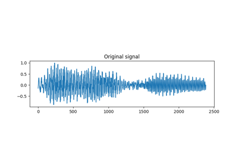
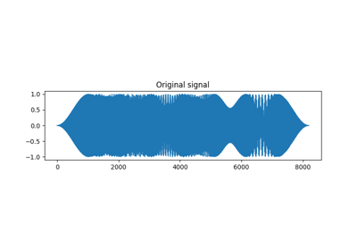
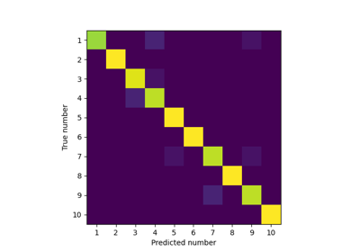

1D examples¶
These scripts demonstrate the capabilities of the 1D scattering transform
class, Scattering1D.

Compute the scattering transform of a speech recording
Compute the scattering transform of a speech recording


Compute the scattering transform of a synthetic signal
Compute the scattering transform of a synthetic signal


Reconstruct a synthetic signal from its scattering transform
Reconstruct a synthetic signal from its scattering transform

Classification of spoken digit recordings
Classification of spoken digit recordings